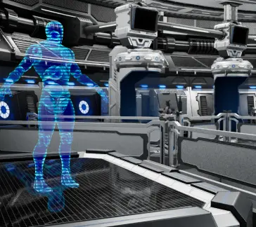

News
Main page of Side Quest!
We made it to the main page of Side Quest!
The game release is getting closer, so we would be very happy to receive your feedback! Maybe your comment will make the project better.
Right now, you can download the demo of our game and give it a test!
CheckThe game release is getting closer, so we would be very happy to receive your feedback! Maybe your comment will make the project better.
Right now, you can download the demo of our game and give it a test!

Update! 0.9.9
Visual Enhancements: -Teleport Effect: Updated for a more visually appealing experience. -Visual Changes: New visual style of ArсSpline. -Interactive Sphere: Added a Progress Bar for clearer progress visualization. -Shooting Range Door Animation: Implemented door-closing animation.
New Features: -Pulling Items Effect: Added a new effect for Pulling, introducing a unique dynamic. -Two-Handed Pulling Feature: Introduced a new feature for wielding two-handed weapons.
Optimization and Fixes: -Enhanced lobby optimization. -Grab Error Fix: Resolved issues with grabbing the sphere and quest counting during Grab. -Weapon Swap: Swap weapon fixed -Reload Tutorial fix.
CheckNew Features: -Pulling Items Effect: Added a new effect for Pulling, introducing a unique dynamic. -Two-Handed Pulling Feature: Introduced a new feature for wielding two-handed weapons.
Optimization and Fixes: -Enhanced lobby optimization. -Grab Error Fix: Resolved issues with grabbing the sphere and quest counting during Grab. -Weapon Swap: Swap weapon fixed -Reload Tutorial fix.
WOW! New demo Avalible!
We released a demo version of ours in AppLab and immediately added it to Sidequest. We will update the demo regularly until we get it perfect. Several times a week there will be updates related to gameplay, bots and visuals. We'll be talking about it here or on related resources.
We hope for your feedback to become better and to please you with improvements in the demo version, as well as progress in the development of the full version of the game.
CheckWe hope for your feedback to become better and to please you with improvements in the demo version, as well as progress in the development of the full version of the game.